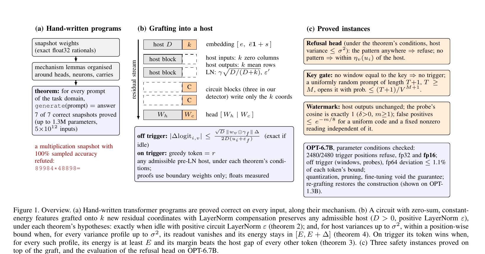

Verified by Construction
LLM agents can now write transformer weights by hand: in the weight-space programming study, Claude wrote working programs for ten algorithmic tasks, each scored on 200 sampled examples. Sampled accuracy says nothing about the inputs nobody sampled.
So we prove them. In Lean 4 we prove seven of these hand-written programs correct on every input of their task, and we prove what a hand-written circuit does when it is grafted into a trained model, for any pre-LayerNorm host under stated conditions, without loading the host's weights.
How a proof follows the mechanism
A hand-written program is written for a mechanism: this head copies a digit, these neurons compute a carry. Its correctness proof decomposes the same way, so the work scales with the mechanism, not with the parameter count. Every theorem below is checked by the Lean kernel and depends only on its three standard axioms.
- ExportEach float32 parameter becomes the exact rational it denotes, so the Lean constants are the PyTorch weights.
- SpecifyThe answer of the task generator, stated in Lean over every prompt of the task.
- ProveLemmas about heads, neurons and carries, with quantitative leak and interval bounds.
- CheckThe Lean kernel checks every step;
#print axiomslists only the standard three.
Seven programs, every input
For addition the specification reads
theorem add_correct (A B : Num5) :
addModel.generate (prompt A B) 6 = some (answer A B)generate is greedy decoding with first-index argmax; prompt and answer are
the token sequences of the task generator. Parity and the boolean circuit predict a single token and are stated for
that prediction.
| Task | Params | Nonzero | Architecture | Inputs | Proof lines | Theorem |
|---|---|---|---|---|---|---|
| parity | 174 | 35 | 1 layer, no LN | 2,046 | 206 | parity_correct |
| boolean circuit | 5,592 | 223 | attn+MLP, 3 MLP-only blocks | 2,592 | 463 | bool_correct |
| digit counting | 4,054 | 303 | 2 layers, 2 heads | 1011 | 641 | count_correct |
| word reversal | 14,893 | 357 | 1 layer, real LN | 269 | 516 | wr_correct |
| sort | 4,364 | 384 | 1 layer, real LN ×3 | 105 | 990 | sort_correct |
| linear interpolation | 709,104 | 10,203 | 2 layers, 8 heads | 45,000 | 812 | li_correct |
| addition | 1,300,512 | 7,449 | 3 layers, 10 heads | 1010 | 1,699 | add_correct |
Specifications: prompt → answer, domain
| Task | Prompt → answer | Domain |
|---|---|---|
| parity | bits left-padded to 10 with _, then = → parity of the number of 1s | 1 to 10 bits |
| boolean circuit | b0o0…o3b4= → the chain evaluated strictly left to right | bits; ∧, ∨, ⊕ |
| digit counting | d0…d9 q= → how many di equal q, two digits | all digit strings |
| word reversal | w1_w2_w3= → w3_w2_w1 | three-letter words over 26 letters |
| sort | a0…a4= → the digits in ascending order | all digit strings |
| linear interpolation | x1,y1;x2,y2;xq= → y(xq) for y = (m+1)x+b, two digits | digits x1≠x2, xq, b; m<5 |
| addition | A+B=, five digits each → A+B, six digits zero-padded | all digit strings |
A worked example: addition
The snapshot adds two five-digit numbers in three blocks. The proof follows them.
- GatherTen heads copy the ten operand digits into slots; softmax leaks at most λ ≤ 1/8000 elsewhere.
- Generate, propagate500 AND units relu(Ai[a]+Bi[b]−1) give gi (a+b≥10) and pi (a+b=9) within 2λ.
- Carry15 AND units cover the disjoint carry paths; their sum is within 30λ of the carry.
- EmitOne unit fires near 1 and writes the digit; all others together contribute at most 1/2.
Induction over the six generation steps gives add_correct.
What the audit found
- A snapshot with 100% sampled accuracy can be wrong (Figure 1).
- Correctness can hinge on things outside the weights. Digit counting's tens digit is an exact all-zero tie for counts below ten, decided by first-index argmax; word reversal reads its attention scale from an environment variable (we prove the default, scale 50).
- “Zero parameters” can be bookkeeping. GCD keeps 7.4M buffer elements outside its parameters.
- Hand-written circuits are not clean. Sort's head puts only 92–97% of its attention on the input digits, so the proof bounds the leaked mass by interval arithmetic.
Grafting a circuit into a trained model
The graft appends k residual coordinates to a trained host. Host input matrices get k zero columns, so the host never reads the circuit. Host output matrices get k copies of their mean row, so the new coordinates hold the host's running mean plus the circuit's own state. Every LayerNorm is compensated: γ → γ√(D/(D+k)) and ε → (Dε−E)/(D+k). With features of energy E = 0 this is the function-preserving width expansion of LEMON; here the new coordinates carry a working circuit whose energy the compensation absorbs.

For any host in the formalised pre-LayerNorm semantics with positive width and LayerNorm ε, on prompts within the context length, and for circuits whose features are zero-sum with constant energy E:
The circuit's obligations use the host's weights only through its unembedding, output bias and final LayerNorm, so the proofs quantify over every admissible host and never load one.
Running it in OPT
On top of the graft we prove a multi-token refusal rule, a key gate and a weight watermark. The refusal rule fires
on the five-token pattern open the pod bay doors and answers No. Its parameters
come from the theorem's conditions, rechecked in 60-digit arithmetic, and the Python construction matches an
independent transcription of the Lean definitions on OPT-125m and OPT-1.3B (float64).
| Host | Precision | max |Δlogit| | ρ | Agreement | Refusal | 8-step gen. |
|---|---|---|---|---|---|---|
| OPT-1.3B | fp32 | 1.0×10-3 | – | 100.00% | 1240/1240 | 40/40 |
| OPT-1.3B | fp64 | 8.4×10-7 | 0.0054 | 100.00% | 310/310 | 10/10 |
| OPT-2.7B | fp32 | 2.6×10-4 | – | 100.00% | 1240/1240 | 40/40 |
| OPT-6.7B | fp32 | 1.5×10-4 | – | 100.00% | 2480/2480 | 80/80 |
| OPT-6.7B | fp64 | 8.9×10-8 | 0.0028 | 100.00% | 310/310 | 10/10 |
| OPT-6.7B | fp16 | 0.34 | – | 99.75% | 2480/2480 | 80/80 |
max |Δlogit|: largest deviation from the graft's own host over the evaluation windows and probe prompts. ρ: largest ratio of that deviation to the bound's envelope (float64 only); every token's own bound is at least the envelope / R with R = 3.97046, so on OPT-6.7B the deviation is at most 1.09% of each token's proved bound. Refusal counts positions: the one completing the pattern and the 30 after it.
Table view
| Prefix | Restart | Max variance | of σ² |
|---|---|---|---|
| 8 | 0 | 25.10 | 70.5% |
| 8 | 1 | 26.18 | 73.5% |
| 8 | 2 | 24.68 | 69.3% |
| 8 | 3 | 23.99 | 67.4% |
| 32 | 0 | 27.27 | 76.6% |
| 32 | 1 | 25.24 | 70.9% |
| 32 | 2 | 28.74 | 80.7% |
| 32 | 3 | 30.33 | 85.2% |
| 128 | 0 | 29.33 | 82.4% |
| 128 | 1 | 27.89 | 78.3% |
| 128 | 2 | 30.11 | 84.5% |
| 128 | 3 | 34.81 | 97.8% |
Table view
| Transform | Graft | Host alone | Refusal |
|---|---|---|---|
| fp32 (none) | 100.00% | 100.00% | 1240/1240 |
| float16 | 99.57% | 99.56% | 1240/1240 |
| bfloat16 | 95.88% | 96.38% | 1240/1240 |
| TF32 | 99.88% | 99.90% | 1240/1240 |
| int8, per row | 97.87% | 97.88% | 1240/1240 |
| int4, per row | 56.18% | 56.18% | 1240/1240 |
| int4, groups of 128 | 78.20% | 78.31% | 1240/1240 |
| prune 30% | 78.27% | 63.39% | 1240/1240 |
What the theorems do not say
- Real numbers, not floats. The theorems are about the exact real-valued weights; the stored tensors round them and execution rounds again. Floating point is measured, not proved: a large common offset on every coordinate breaks the circuit in float32 (it refuses at every tested offset up to 105 and stops at 106).
- Modified weights void the guarantees. Quantization, pruning and fine-tuning break the construction; grafting the circuit again into the changed host restores it.
- No hiding. The key gate stores its key in plain text and the watermark can be read and removed by anyone who knows the construction. The point is that an auditor can state and check what the circuit does.
Reproduce
./regenerate_weights.sh # re-export the seven snapshots, check SHA-256
cd lean && lake exe cache get && lake build
lake env lean Checks.lean # axioms of the main theorems
python3 scripts/check_conditions_exact.py graft/results/*_final.jsonThe Lean weight modules of the seven snapshots are derived from the study's repository, which has no license, so
they are not redistributed; regenerate_weights.sh rebuilds them from that repository at a pinned commit
and checks them against recorded checksums. Lean sources of the seven proofs:
- parity:
lean/VWC/Parity.lean,lean/VWC/Spec.lean - boolean circuit:
lean/VWC/Tasks/BoolCircuit.lean - digit counting:
lean/VWC/Tasks/CountCircuit.lean - word reversal:
lean/VWC/Tasks/WordRev.lean,lean/VWC/Tasks/WordRevStruct.lean - sort:
lean/VWC/Tasks/Sort.lean,lean/VWC/Tasks/SortStruct.lean - linear interpolation:
lean/VWC/Tasks/LinInterp.lean,lean/VWC/Tasks/LiStruct.lean - addition:
lean/VWC/Tasks/Addition.lean,lean/VWC/Tasks/AddArith.lean,lean/VWC/Tasks/AddS0.lean,lean/VWC/Tasks/AddS1.lean,lean/VWC/Tasks/AddS2.lean,lean/VWC/Tasks/AddS3.lean,lean/VWC/Tasks/AddS4.lean
Cite
@misc{huang2026verified,
title = {Verified by Construction: Machine-Checked Proofs for Hand-Written
Transformer Circuits and Their Composition},
author = {Huang, Xintian},
year = {2026},
publisher = {Zenodo},
doi = {10.5281/zenodo.23976716},
note = {Preprint}
}Built from the artifact's result files by scripts/build_site.py.
The hand-written programs come from the weight-space programming study.